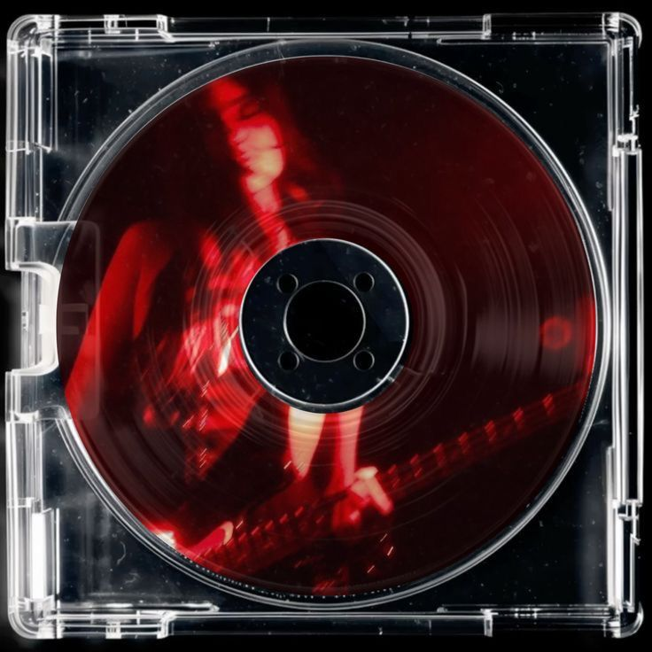

Latest Mix / Void Mandala / Watch Now /

OMIX Studio · DJ Haein × OMIX
Genre
불교와 현대음악이 합쳐져 새로운 음악의 장르. 불교의 교리를 경험하고 즐기세요.

Best experienced with sound
Track 01
Void Mandala
Section 03
Rooted in the ancient resonance of Korean Buddhist chanting, OMIX translates sacred sound into the language of the club. Each track is a meditation — structured not by dogma, but by rhythm, space, and the persistent hum of being. 108 BPM. One breath. One return.
OMIX Studio · DJ Haein × OMIX
AUM Club Seoul
Seoul, Korea
Zandari Festa
Seoul, Korea
Berghain
Berlin, Germany
Fabric London
London, UK
Om4
DJ Haein × OMIX Studio